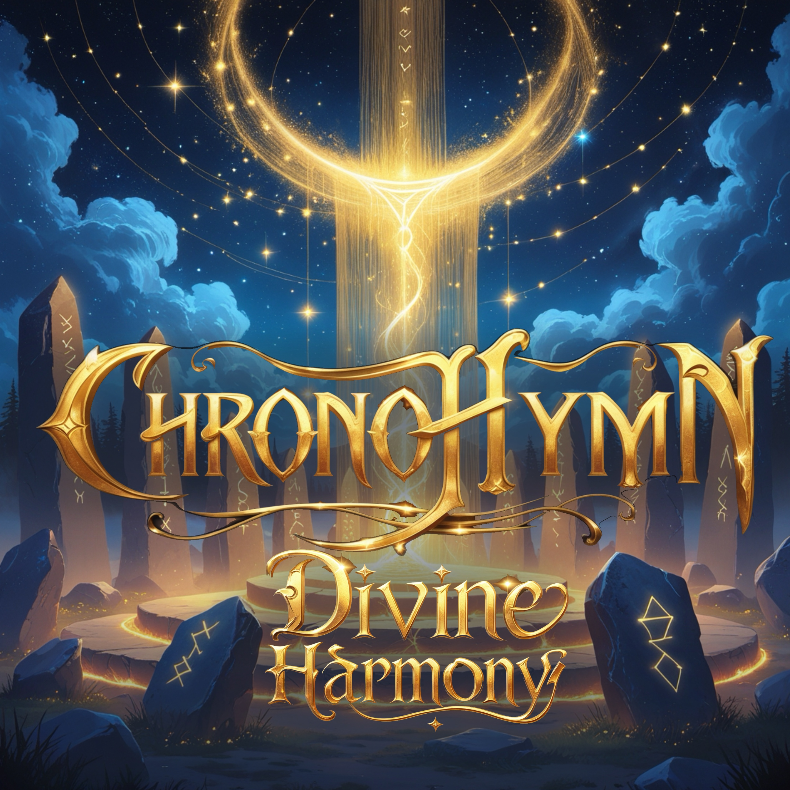

Release Date: June 9, 2025
About: A sacred anthem honoring the shared truths of pantheons—unity and resonance in every beat.
Divine Harmony
[Verse 1] Whispered words across the flame, Echoes call each sacred name. In this circle, hearts ignite, All the paths converge tonight. [Chorus] Divine Harmony, sing to me Ancient voices rising free. Through the ages, let it be One in spirit, one with Thee. [Verse 2] Under moon and starlit sky, Weaves the chant that cannot die. Every note a binding thread, We honor those who came and bled. [Bridge] Feel the pulse, the heartbeat strong, Join the chorus, right the wrong. In this song, we find our home, Guided by the ancient tone. [Chorus – Repeat] Divine Harmony, sing to me Ancient voices rising free. Through the ages, let it be One in spirit, one with Thee.

Release Date: June 9, 2025
About: A battle hymn forged in divine justice—protectors rising to uphold honor and shield the innocent.
Týr’s Oath
[Intro] By the steel and by the oath, We stand beneath the hallowed growth. [Verse 1] Týr’s blade shines in the north, A vow of courage—henceforth true. Justice forged by sacred rite, Protector sworn to guard the light. [Chorus] I pledge my heart to Týr’s call, To rise and never, never fall. In the name of law and truth, I swear my oath for ages youth. [Verse 2] In the halls of gods we stand, Shielded by a righteous hand. Bound by honor, fierce and bold, Guardians rise as tales unfold. [Bridge] Hear the clash, the thunder’s roar, Ancient Oath we can’t ignore. Stand as one beneath the sky, For the brave shall never die. [Chorus – Repeat] I pledge my heart to Týr’s call, To rise and never, never fall. In the name of law and truth, I swear my oath for ages youth.

Release Date: June 9, 2025
About: Rising with the summer sun, Solfire is a heartbeat of flame—primal rhythm, fierce energy, and solstice magic.
Solfire
[Opening Chant] Sun above, flame below, We honor you in ember’s glow. [Verse 1] Spear of dawn ignites the land, Waking life with golden hand. From the hearth, the blast is born, Rising high to greet the morn. [Chorus] Solfire, Solfire, flame of life, Burn away all doubt and strife. Solfire, Solfire, primal heat, Dance within our hearts’ own beat. [Verse 2] In the circle, shadows flee, Ash and smoke from memory. Let the blaze consume our fear, Guide the way for those who hear. [Bridge] Feel the fire forging fate, No more hunger, no more hate. In its warmth, we are made whole, Sunlit embers in the soul. [Chorus – Repeat] Solfire, Solfire, flame of life, Burn away all doubt and strife. Solfire, Solfire, primal heat, Dance within our hearts’ own beat. [Outro] Sunset fades, the embers die, Yet within, the flame’s reply. In our blood, the fire remains, Solfire lives in hallowed veins.